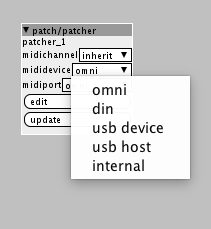

Hey there,
is it possible to differentiate from which source midi input is coming?
I control my patch with a midi controller which is connected to usb_host_port1 of the axoloti.
I want to differentiate between the midi cc messages coming directly from the controller or the ones I recorded
to a sequencer which is connected to the axolotis din input.
At the moment I do this by changing the midi channel but it is not so handy like this...
Is there a way to change the midi handler somehow?
thanks in advance,
FLub
Midi receive source
Flub
#1
lokki
#2
you can embed the patch in a subpatch to get a midi selector, but it is not a runtime choice...
lokki
#4
you can only do this on patch compilation, not while running, is that your question? or did you not get a midi selector at all on the subpatch?
it should look like this:
